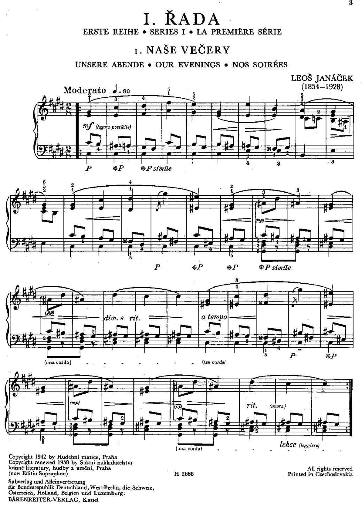

← Sandbox
All music
Janáček — On an Overgrown Path
Performance
On an Overgrown Path, Book I
· Josef Páleníček · 28:51
Play recording
Watch on YouTube
Sheet music
Score editions on IMSLP
Score facsimile
